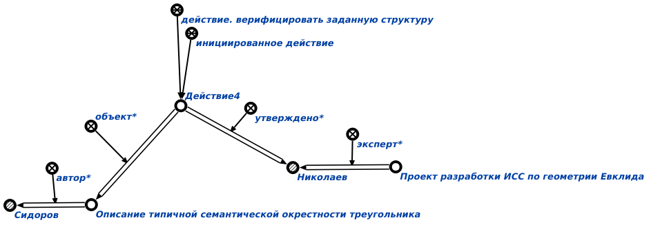

Команда утверждения экспертом верифицируемого предложения предназначена для утверждения* экспертом* верифицируемого предложения*, описывающего изменения, вносимые разработчиком* в базу знаний. Единственным аргументом запроса является знак действия. верифицировать заданную структуру. Результатом выполнения запроса является утверждение* экспертом* предложения* разработчика* по редактированию базы знаний, которое было отправлено администратором* на проверку эксперту*. Пример результата:
